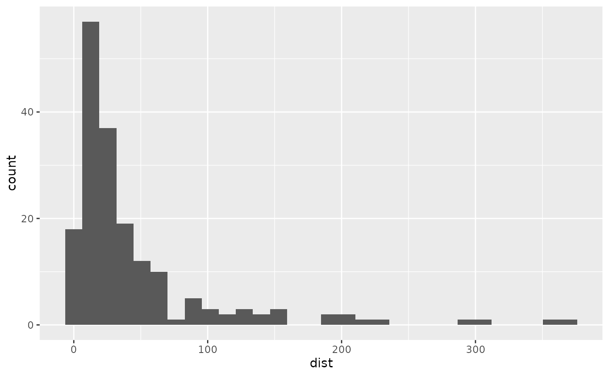

Create and display a accessible exploration webpage SVG of graph
MakeAccessibleSVGMethod.RdCreates the necessary SVG and XML files for a graph object (as long as graph type is supported). Then turns them into a html file and opens it for viewing (if a interactive session) in your browser.
Usage
MakeAccessibleSVG(x,
file = paste0(deparse(substitute(x)), "-SVG"),
view=interactive(), cleanup = TRUE, ...)
# S3 method for class 'ggplot'
MakeAccessibleSVG(x,
file = paste0(deparse(substitute(x)), "-SVG"),
view=interactive(), cleanup = TRUE, VI_and_Describe = TRUE, ...)Arguments
- x
a graph object for which a method exists
- file
The shared name for the SVG, XML and HTML files to be created. It will also be the title of the html webpage.
- view
launch in browser; this is the default when in interactive session
- cleanup
Whether the function should remove the svg and xml files after they have bee embedded into the hmtml file.
- VI_and_Describe
Whether to include the VI and Describe outputs in the built webpage.
- ...
arguments passed on to other methods/functions
Details
This function can be thought of as just a shortcut for quickly creating a SVG webpage for exploration. Each individual step can be done with the SVGThis(), AddXML() and BrowseSVG() functions. Using this is currently the quickest workflow for accessing the SVG features of BrailleR.
More information can be found in the Exploring graphs vignette.
It has support for some of the base plots however you can consider this support deprecated.
Value
NULL. This function is solely for the purpose of creating SVG and XML files and displaying them
References
P. Dengler et al. (2011) Scalable vector graphics (SVG) 1.1, second edition. W3C recommendation, W3C. http://www.w3.org/TR/2011/REC-XML11-20110816/
Examples
#Base R
#boxplot = boxplot(rnorm(1e4))
#MakeAccessibleSVG(boxplot, view = F)
#attach(airquality)
#scatter = ScatterPlot(x=Wind, y=Ozone, pch=4, base=TRUE)
#detach(airquality)
#MakeAccessibleSVG(scatter)
#ggplot2
library(ggplot2)
tsplot = TimeSeriesPlot(airquality, x=airquality$Temp)
MakeAccessibleSVG(tsplot)
#> This is an untitled chart with no subtitle or caption.
#> It has x-axis 'Time' with labels 0, 50, 100 and 150.
#> It has y-axis 'Temp' with labels 60, 70, 80 and 90.
#> The chart is a set of 1 line.
#> Line 1 connects 153 points.
#> SVG and XML files created successfully.
barChart = ggplot(Orange, aes(x = Tree)) +
geom_bar()
MakeAccessibleSVG(barChart)
#> This is an untitled chart with no subtitle or caption.
#> It has x-axis 'Tree' with labels 3, 1, 5, 2 and 4.
#> It has y-axis 'count' with labels 0, 2, 4 and 6.
#> The chart is a bar chart with 5 vertical bars.
#> Bar 1 is centered at 1, and length is from 0 to 7.
#> Bar 2 is centered at 2, and length is from 0 to 7.
#> Bar 3 is centered at 3, and length is from 0 to 7.
#> Bar 4 is centered at 4, and length is from 0 to 7.
#> Bar 5 is centered at 5, and length is from 0 to 7.
#> SVG and XML files created successfully.
histogram = ggplot(attenu, aes(x=dist)) +
geom_histogram()
histogram
#> `stat_bin()` using `bins = 30`. Pick better value with `binwidth`.

#> This is an untitled chart with no subtitle or caption.
#> It has x-axis 'dist' with labels 0, 100, 200 and 300.
#> It has y-axis 'count' with labels 0, 20 and 40.
#> The chart is a bar chart with 30 vertical bars.
MakeAccessibleSVG(histogram)
#> `stat_bin()` using `bins = 30`. Pick better value with `binwidth`.
#> This is an untitled chart with no subtitle or caption.
#> It has x-axis 'dist' with labels 0, 100, 200 and 300.
#> It has y-axis 'count' with labels 0, 20 and 40.
#> The chart is a bar chart with 30 vertical bars.
#> SVG and XML files created successfully.
# Cleaning up
unlink("barChart-SVG.html")
unlink("histogram-SVG.html")
unlink("tsplot-SVG.html")